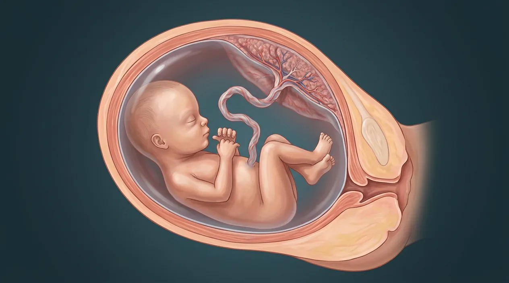

How this part of the body works
After early embryonic organ formation, the fetal period emphasizes growth and functional maturation until birth. Obstetric gestational age is counted from the first day of the last menstrual period (LMP), approximately two weeks longer than post-fertilization age in a typical cycle. Common trimester definitions are 0–13 weeks 6 days, 14–27 weeks 6 days, and 28 weeks to delivery by LMP. Three clearly labeled digital models give undated early-development, illustrative middle-pregnancy and illustrative later-pregnancy contexts; NONE can date a pregnancy, verify viability or measure a fetus. The images are not scans or photographs. Clinical fetal assessment requires appropriate prenatal care and actual imaging.
Follow every stage independently
Sperm and egg are separate branches before fertilization. Obstetric gestational weeks are usually counted from the last menstrual period, roughly two weeks before conception. Digital labor-stage illustrations model separate moments, not clinical birth photographs or patient measurements.
See the anatomy at the right scale
Tap an image to enlarge and tap again to close. These are digital educational models, not microscope photos, measured ultrasounds, clinical birth images or exact developmental clocks.
Stylized early-developing form, not a specific clinical week.
Conceptual maternal uterus, placenta and fetus; not measured or datable to an exact week.
Head-down fetal position and attached placenta; not a prediction of presentation or viability in a patient.
Stage anatomy and developmental milestones
These 20 anatomy and development entries explain each stage without placing false pointers on an illustrative context plate.
Gestational age (LMP)
Obstetric clock begins on first day of last menstrual period, typically before fertilization.
What it doesStandardizes prenatal dating.
Clinical connectionThe difference from conception age is approximate and varies.
Picture context Stylized early-developing form, not a specific clinical week.
Post-fertilization age
Developmental clock begins at fertilization, often about two weeks less than LMP dating.
What it doesKeeps embryo and fetus timelines intelligible.
Clinical connectionExact conception day is often uncertain outside assisted reproduction.
Picture context Stylized early-developing form, not a specific clinical week.
First trimester
Clinical period extends from LMP to 13 weeks and 6 days, encompassing fertilization and early organ formation.
What it doesProvides a clinical pregnancy time frame.
Clinical connectionDo not confuse trimester week one with an existing embryo.
Picture context Stylized early-developing form, not a specific clinical week.
Second trimester
From 14 weeks to 27 weeks and 6 days gestational age, growth and maturation continue.
What it doesOffers a middle pregnancy interval.
Clinical connectionA single model is not an ultrasound for week-specific findings.
Picture context Conceptual maternal uterus, placenta and fetus; not measured or datable to an exact week.
Third trimester
From 28 gestational weeks to delivery, growth and organ maturation continue.
What it doesFrames later pregnancy development.
Clinical connectionA fetus is not guaranteed mature just because a calendar boundary is crossed.
Picture context Head-down fetal position and attached placenta; not a prediction of presentation or viability in a patient.
Fetal head and brain
Brain grows and its structures continue developing throughout fetal life.
What it doesSupports later sensory and motor functions.
Clinical connectionA large head in digital art cannot determine age.
Picture context Conceptual maternal uterus, placenta and fetus; not measured or datable to an exact week.
Fetal limbs
Limbs lengthen and joints and muscles support movement in uterine environment.
What it doesPermit spontaneous fetal motion.
Clinical connectionReduced perceived movement merits clinical assessment; art is not a motion study.
Picture context Conceptual maternal uterus, placenta and fetus; not measured or datable to an exact week.
Fetal heart
Heart pumps fetal blood through a circulation including placental return and specialized shunts.
What it doesMaintains fetal perfusion.
Clinical connectionA model does not substitute for actual fetal heart evaluation.
Picture context Conceptual maternal uterus, placenta and fetus; not measured or datable to an exact week.
Foramen ovale
Normal fetal atrial opening allows some blood to pass from right to left atrium before birth.
What it doesRoutes flow when lungs are not yet performing air exchange.
Clinical connectionPostnatal closure varies; cannot be inferred from this image.
Picture context Conceptual maternal uterus, placenta and fetus; not measured or datable to an exact week.
Ductus arteriosus
Fetal vascular connection diverts much blood from pulmonary trunk to aorta.
What it doesBypasses fluid-filled fetal lungs.
Clinical connectionIt normally constricts after birth; visual cannot diagnose patency.
Picture context Conceptual maternal uterus, placenta and fetus; not measured or datable to an exact week.
Ductus venosus
Fetal vascular passage directs some oxygen-rich umbilical venous blood toward inferior vena cava.
What it doesAllows a portion of placental return to bypass hepatic sinusoids.
Clinical connectionShunt flow and closure require actual clinical evaluation.
Picture context Conceptual maternal uterus, placenta and fetus; not measured or datable to an exact week.
Placental exchange
Fetal villi near maternal blood permit gas and nutrient transfer across a barrier.
What it doesSupports prenatal oxygenation before air breathing.
Clinical connectionMaternal and fetal blood are not normally one open pool.
Picture context A related regional anatomy model; the individual event or cell is not separately identifiable in this picture.
Umbilical cord
Normally two arteries and one vein link fetus to placental circulation.
What it doesTransports fetal blood to and from placenta.
Clinical connectionCord anatomy is not assessed by counting pixels in this early image.
Picture context A related regional anatomy model; the individual event or cell is not separately identifiable in this picture.
Amnion and fluid
Amniotic membrane encloses fluid environment around fetus.
What it doesBuffers movement and supports organ development.
Clinical connectionFluid amount must be evaluated clinically, not from an illustration.
Picture context Head-down fetal position and attached placenta; not a prediction of presentation or viability in a patient.
Fetal lung maturation
Airway and gas-exchange structures continue to develop; surfactant availability rises with maturity.
What it doesPrepares for breathing after delivery.
Clinical connectionFetal lungs are not normally responsible for placental gas exchange.
Picture context Head-down fetal position and attached placenta; not a prediction of presentation or viability in a patient.
Fetal kidneys
Developing kidneys produce urine that contributes to amniotic fluid later in pregnancy.
What it doesParticipate in fluid balance before birth.
Clinical connectionNo renal function can be concluded from a digital fetal plate.
Picture context Head-down fetal position and attached placenta; not a prediction of presentation or viability in a patient.
Swallowing and gut
Fetus swallows fluid and the gastrointestinal system continues maturing.
What it doesParticipates in fluid cycling and intestinal development.
Clinical connectionImage cannot diagnose swallowing or obstruction.
Picture context Head-down fetal position and attached placenta; not a prediction of presentation or viability in a patient.
Skeletal mineralization
Bone and cartilage change with ongoing fetal growth and movement.
What it doesSupports structural maturation.
Clinical connectionA week-by-week bone count is not available from this plate.
Picture context Conceptual maternal uterus, placenta and fetus; not measured or datable to an exact week.
Variable fetal growth
Fetal size and growth trajectories differ; clinical assessment uses validated methods.
What it doesSupports monitoring across prenatal visits.
Clinical connectionOne unscaled illustration cannot estimate fetal weight or health.
Picture context Head-down fetal position and attached placenta; not a prediction of presentation or viability in a patient.
Transition at birth
After birth, lung inflation and placental separation trigger changes in blood flow and oxygen source.
What it doesShifts dependence from placenta to breathing air.
Clinical connectionThis chapter stops before the three separately described labor stages.
Picture context Head-down fetal position and attached placenta; not a prediction of presentation or viability in a patient.
Five questions about Fetus · growth & pregnancy trimesters
Short answers grounded in the structures described above. Use the illustrated guide for anatomical context.
How is gestational age different from conception age?
Obstetric gestational age counts from the first day of the last menstrual period. Age since fertilization is commonly about two weeks less in a typical cycle, but that difference varies with ovulation timing.
When do first, second and third trimesters fall?
A common LMP-based convention is first through 13 weeks and 6 days, second from 14 through 27 weeks and 6 days, and third from 28 weeks until delivery. These are clinical groupings, not exact developmental switches.
What is the fetal period mainly characterized by?
After embryonic organ plans are established, growth and functional maturation become prominent. Developing organs continue to change rather than all appearing suddenly complete.
Why does a fetus have circulation shunts?
Before birth oxygen comes from placenta, not air-breathing lungs. The foramen ovale, ductus arteriosus and ductus venosus direct parts of fetal blood flow through specialized routes.
Can these fetal images date a pregnancy or confirm fetal health?
No. They are three digital educational plates showing undated early development and illustrative middle and later pregnancy. They are not prenatal ultrasounds or patient scans and cannot measure growth, determine exact weeks or assess viability; clinical care uses actual examinations and imaging.
Related anatomy guides
Follow these connected structures and body systems in the illustrated atlas.
 Embryo · early organ formationSeparate embryonic chapter: germ layers, neurulation, folding, early heart and limb buds before fetal growth.↗
Embryo · early organ formationSeparate embryonic chapter: germ layers, neurulation, folding, early heart and limb buds before fetal growth.↗ Labor stage 1 · cervix dilatesSeparate first-stage birth chapter: uterine contractions, cervical effacement and dilation to complete opening.↗
Labor stage 1 · cervix dilatesSeparate first-stage birth chapter: uterine contractions, cervical effacement and dilation to complete opening.↗ Uterus — layers & cavityThe womb in cross-section: endometrium, junctional zone, myometrium, cavity, isthmus and the key clinical boundaries.↗
Uterus — layers & cavityThe womb in cross-section: endometrium, junctional zone, myometrium, cavity, isthmus and the key clinical boundaries.↗ Female pelvis & perineumThe female pelvic floor in sagittal section: bladder and urethra, vagina and anteverted uterus, rectum behind — plus the ligaments and pouches that position them.↗
Female pelvis & perineumThe female pelvic floor in sagittal section: bladder and urethra, vagina and anteverted uterus, rectum behind — plus the ligaments and pouches that position them.↗Further reading
General anatomy references and related source chapters for continued study. These links do not make the digital illustrations clinical images or certify every anatomical variant.
This educational page is not medical advice and has not undergone formal clinical peer review. Spotted an error? Contact the editor.
Open the regional digital plate, study entries and a short self-test. Visible markers occur only for identifiable sperm and oocyte structures.